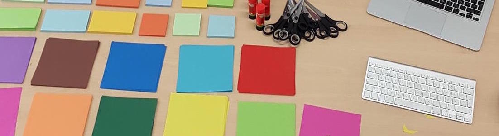

Vi introducerar IT och teknik i klassrummet tvärvetenskapligt via konst för att skapa utrymme för elevernas uttryck och känslor. Vi mjukar upp ett ämne som annars kan anses fyrkantigt och därmed breddar och ökar vi intresset för IT och teknik bland en större mångfald av elever. Inspirationsdagens mål är få elever att för första gången gå från konsumtion av digitalt kontent till produktion. Vi börjar smått med att skapa konst för att sedan visa hur de kan ta ett större samhällsengagemang genom att bygga växthus.
Under föreläsningen lyfter vi upp hur kanalisering ökar vår förmåga att förstå våra känslor och varför vi beter oss som vi gör. Vi utforskar hur verktyg kan hjälpa oss i tillfällen där vi inte kan urskilja vad vi känner och hur processen kan påverkas av detta, målmedvetet och sökande skapande. Vi avslutar med hur dessa verktyg öppnar upp dörrar och hur vi skapar utrymme för att utforska vår identitet bort om vad samhället strukturellt har givit oss. När vi når denna insiktet kan vi börja skapa värde och förändra vår omgivning.
En kreativ workshop där deltagarna får utforska hur analog- och digitalkonst kan samverka i samma skapande process. Det handlar om att bryta ner barriärer mellan olika kunskapsområden och skapa synergi. Deltagarna kommer att få klippa i papper, räkna i procent och ekvationer, studera diagram, programmera med webbspråken HTML/CSS och behandla nutida utmaningar.
Afra Noubarzadeh, 2016
Afra Noubarzadeh, 2016
Afra Noubarzadeh, 2014